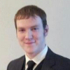

| Home |
| About Us |
| Officers |
| Contact Us |
| Resources |
 CNS CNS
|
 UT Physics UT Physics
|
| ASA |
Officers
President: Evan Ott
Hi there! I'm Evan Ott and I'm the 2012-2013 President of the Society of Physics Students. I'm a sophomore physics and computer science major and an undergraduate TA for "UGS 303: Originality in the Arts and Sciences" and "PHY 110C: Science of the Times". I served as the SPS Vice-President Spring 2012, helping largely with the Prospective Students Weekend. I am not currently in a research group, but have worked with the Cosmic Dawn FRI stream, looking at the origins of galaxy formation, and hope to get involved with the Center for Relativity.
Vice President: Gabriel Cossio
 SUP. I'm a 3rd year physics student at UT. I'm from houston, texas but originally in from this far of nation named Bolivia. I used to play for the UT frisbee and used to work for the high energy density science group (Petawatt laser group) and now i'm just taking classes and working with Prof. Elaine Li's group. Austin is the beezneez, i love the food, music, and people here. but mostly.... THE PHYSICS DEPARTMENT! I'm pretty laid back about everything so feel free to email me with any questions regarding getting started in research, classes, and anything else.
SUP. I'm a 3rd year physics student at UT. I'm from houston, texas but originally in from this far of nation named Bolivia. I used to play for the UT frisbee and used to work for the high energy density science group (Petawatt laser group) and now i'm just taking classes and working with Prof. Elaine Li's group. Austin is the beezneez, i love the food, music, and people here. but mostly.... THE PHYSICS DEPARTMENT! I'm pretty laid back about everything so feel free to email me with any questions regarding getting started in research, classes, and anything else.
Outreach Coordinator: Joseph Crowley
I'm a 4th year physics, math and astronomy student. In my spare time I like to sing in choirs and meet new people. I've lived in Texas my whole life, and the only big metroplex I haven't lived in is Huston.
Treasurer: Dawson Baker
I'm a fourth year economics and physics student. With my time - if I tend to make use of it awake - I enjoy the indoors, the outdoors, music, adventuring, thinking abstractly, and am relatively carnivorous. My main musical instrument is the fourier series; I also play guitar and the accordion. I come from Ithaca, New York, a land of rain, ice, slush, much less ultraviolet radiation, and four seasons. If you have a want of needlessly academic conversations I'm into that kind of thing.
Secretary: Jonathan Blair
| ___________ _ _ _ / \ | - / \ \ | |\ \ |_- \ \| \ \_/| \_/ ___________ |
<--Rocks! I'm Jonathan, your secretary, and I'm a senior in Physics and Mathematics. SPS is like a second family to me, so being an officer and improving physics life is awesome. I am currently working with Rex Lundgren of Dr. Fiete's research group. We're building a computational model of quantum entangled many-body systems. I like both the theory and the demand for efficient programming. In my "spare" time, I enjoy computer and tabletop games, cooking, and I play classical piano. If you have any questions or ideas, ask away! It's hard to miss my beard and long hair. w[8-)} |
Webmaster: Tharon Morrison
Hello everyone! I am a second year Physics major. Some of you may recognize me from the classes I have been an LA for and some of you may have just seen me around. I work in Professor Raizen's lab here on campus. I hope everyone has a great year here in SPS because Physics is awesome!